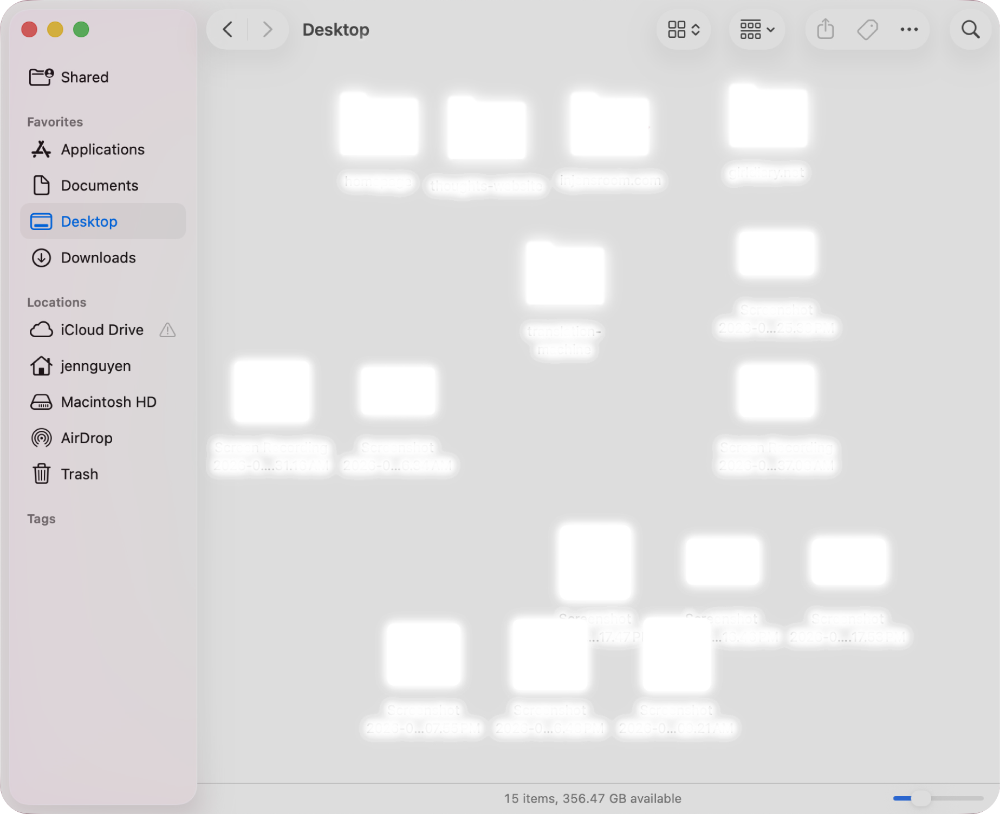

about
my friend michael was going through his files (on mac finder) to search for a specific photo he wanted to show me, and said (multiple times) something along the lines of “sorry my files are so messy”
i honestly didn't even think (or care) that they were messy. i know that i've also apologized about my folders and files in the same way. i am so embarrassed of how unorganized they are!
it reminded me of the way i, and many others, talk and feel about our bedrooms. “sorry its so messy in here!”
bedrooms, similarly to file managers on our computers, are sacred personal spaces. they give permission for (& maybe perpetuate) the accumulation of clutter and chaos. we can be soooo messy and no one would ever know unless we welcomed them into these spaces.
this is my room and the things that happen in my room documented through/translated to files and folders <3
i honestly didn't even think (or care) that they were messy. i know that i've also apologized about my folders and files in the same way. i am so embarrassed of how unorganized they are!
it reminded me of the way i, and many others, talk and feel about our bedrooms. “sorry its so messy in here!”
bedrooms, similarly to file managers on our computers, are sacred personal spaces. they give permission for (& maybe perpetuate) the accumulation of clutter and chaos. we can be soooo messy and no one would ever know unless we welcomed them into these spaces.
this is my room and the things that happen in my room documented through/translated to files and folders <3
